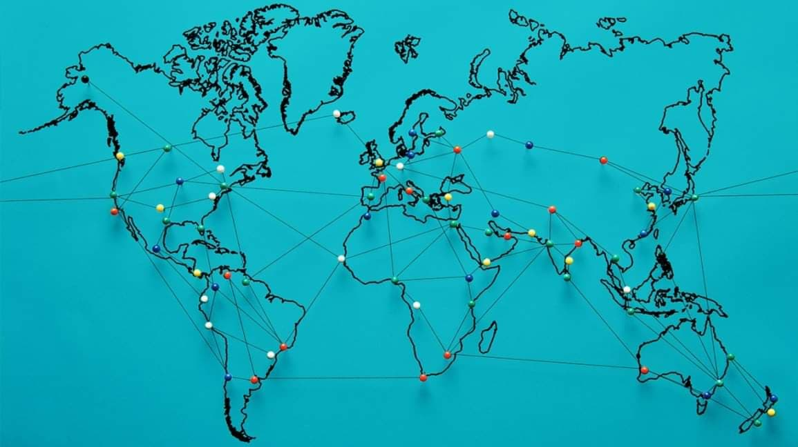
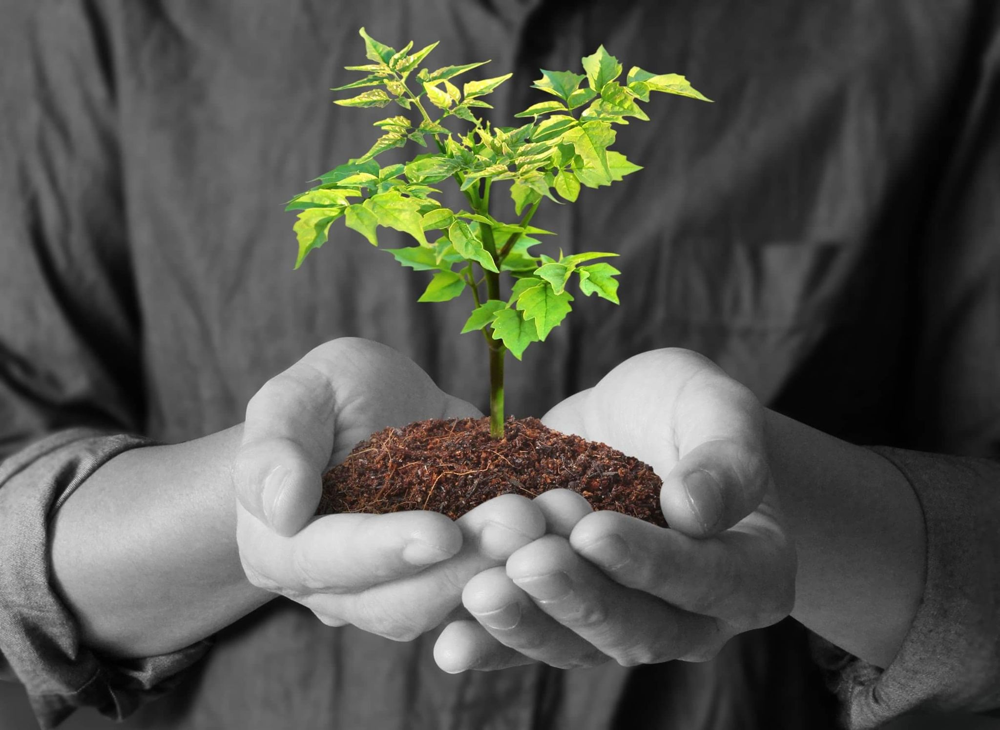

By: Group 7 9C

Mostly this pandemic has left our lives in distraught and has
tipped our axises, it has come as a surprise to some of us and has changed the way we live and
the things we did on a daily basis.
The lockdown has made us realise the importance of actually appreciating the things and people
that we take for granted, but what it has taught us is the spirit of togetherness and giving a
helping to others and helping where one can.
It has come to show us that money and material things are not as important as human life and
caring for each other in times of need, it has shown how much greatness can come from working
together and what it can do for a nation and community just by giving a helping where it is
needed and wanted.
TODAY

COVID-19 (Coronavirus) has affected day-to-day life and is slowing
down the global economy. This pandemic has affected thousands of peoples, who are either sick or
are being killed due to the spread of this disease. The most common symptoms of this viral
infection are fever, cold, cough, bone pain and breathing problems, and ultimately leading to
pneumonia. This, being a new viral disease affecting humans for the first time, vaccines are not
yet available. Thus, the emphasis is on taking extensive precautions such as extensive hygiene
protocol (e.g., regularly washing of hands, avoidance of face to face interaction etc.), social
distancing, and wearing of masks, and so on. This virus is spreading exponentially region wise.
Countries are banning gatherings of people to the spread and break the exponential curve.1 , 2
Many countries are locking their population and enforcing strict quarantine to control the
spread of the havoc of this highly comsmunicable disease.
COVID-19 has rapidly affected our day to day life, businesses, disrupted the world trade and
movements. Identification of the disease at an early stage is vital to control the spread of the
virus because it very rapidly spreads from person to person. Most of the countries have slowed
down their manufacturing of the products.3 , 4 The various industries and sectors are affected
by the cause of this disease; these include the pharmaceuticals industry, solar power sector,
tourism, Information and electronics industry. This virus creates significant knock-on effects
on the daily life of citizens, as well as about the global economy.
Despite having the strictest and longest lockdown in the world,
COVID-19 cases in the Philippines continue to rise. On August 1, 2020, the country logged almost
5,000 positive cases, its highest count since the onset of the pandemic in February 2020. This
brings the total to 98,232 cases, 2,039 of whom have already died.
As the Philippines undergoes a new set of quarantine protocols for the first half of August
2020, 60 medical associations have asked for a time-out and sought the national government to
revert the Philippine capital, Metro Manila back to a stricter enhanced community
quarantine.These associations cite two main reasons for their plea for a renewed lockdown. They
argue that the healthcare system of the nation’s capital has reached a critical level. Given the
“seemingly endless number of patients trooping” to hospitals for emergency care and admission,
“the healthcare system has been overwhelmed”. As a consequence, they say that healthcare workers
have been experiencing fatigue and depression as they “can no longer bear the burden of deciding
who lives and who dies”.
TOMORROW

Even through this coronavirus pandemic, we should look to God and not
lose hope in him. We need to be using this as an opportunity and discover the godly way of
facing trials and tribulations in our own individual lives and as a community. We should suffer
with joy just like Paul and Silas in the prison and be patient knowing that after all this pain
it will be better and those who kept strong and hold of their faith in Christ will be rewarded
more than they’ll ever know by the FATHER.

About the Illustration, It's a Plant. The Plant serves as Hope in
Life, where the Plant Gradually grows and So Are We. It Evovles every Hour until Its the Right
time to Mature. This Hope in Life is Somehow like This Plant.
Here is a Message of Hope
https://youtu.be/7LH9ssTR_fQ
By: Valenzuela, Barcelona , Balgos , Delicana and Decena